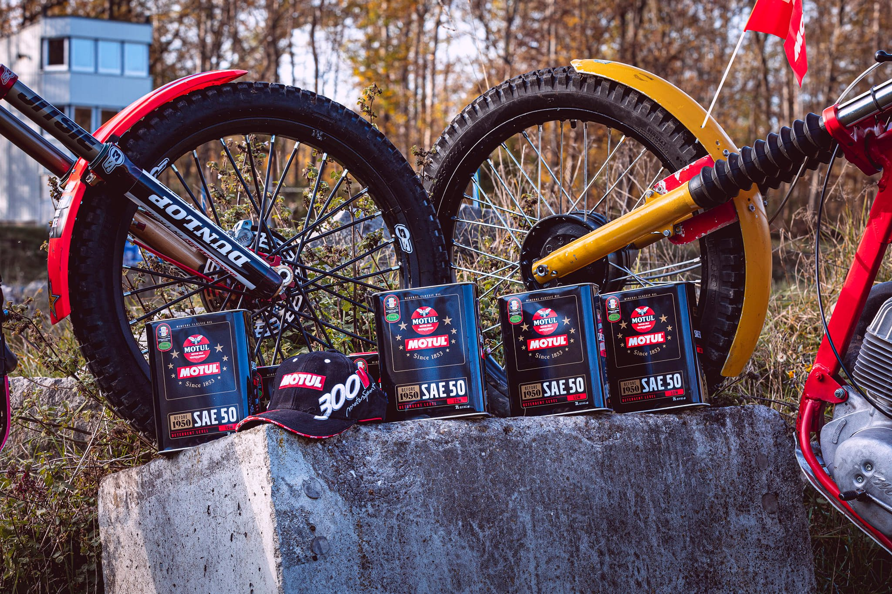
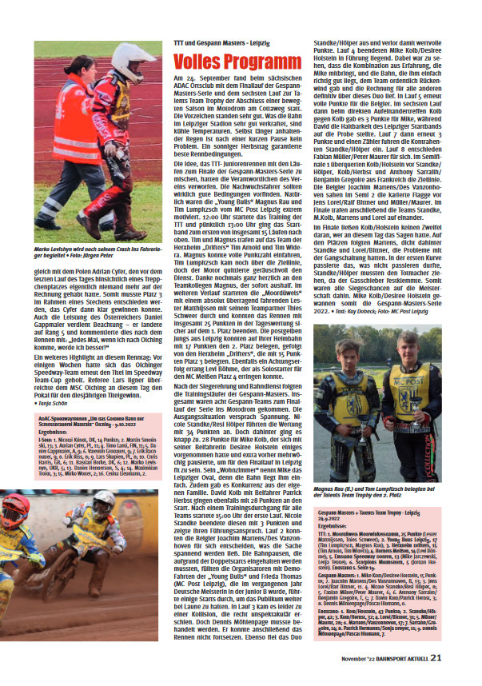
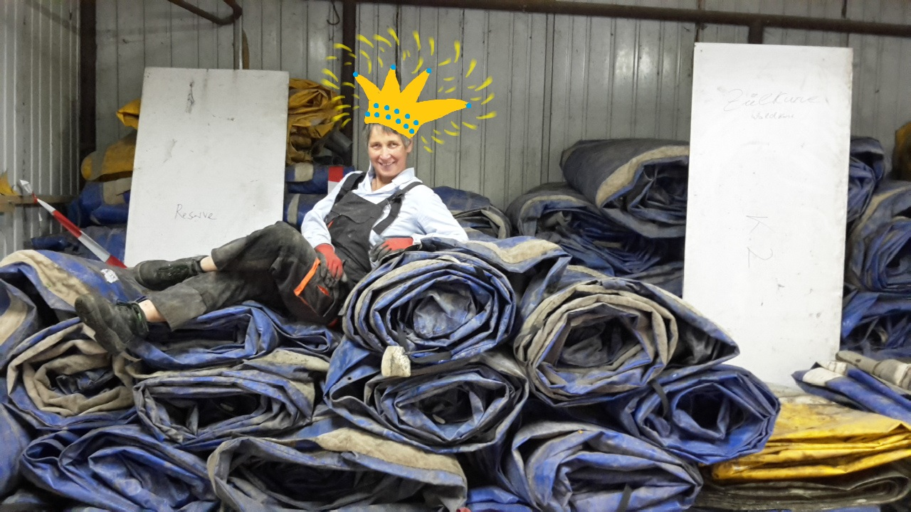
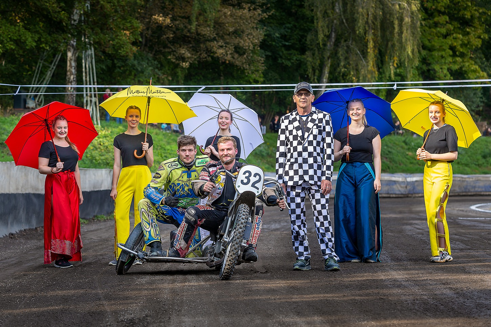
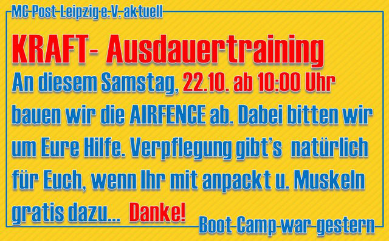

Gestern hatten wir einen sehr aktiven und erfolgreichen Tag im Verein. Zusammen mit unseren Trial- und Speedway Leuten erhielten wir unser Sponsoring von Motul-Oil. Zur Übergabe des flüssigen Goldes haben wir den professionellen Fotografen, Jan Zwicker eingeladen. Großes Dankeschön an Ihn und Wheels and Vibes! Es…
Gestern haben wir bei schönstem Herbstwetter und guter Stimmung im Motodrom am Cottaweg unsere Air Fence in einer Rekordzeit abgebaut. Das war ne klasse TEAMLEISTUNG. Wer jetzt nicht so recht weiß, was das bedeutet: Stellt Euch einfach mal vor, ihr baut eine 300m lange Hüpfburg…
Am Samstag, den 24.September 2022 fand am Cottaweg in Leipzig, wie jedes Jahr bisher, das Finale der Gespann Masters 2022 (B-Lizenz-Gespanne) auf dem Programm. Schon im Vorfeld konnte es nicht spannender sein. 3 Gespanne hatten es noch in der Hand den Masters-Titel einzufahren und gar…
An diesem Samstag, 22.10. ist es soweit: Air Fence Abbau im Motodrom am Cottaweg. Packt mit an und nutzt es als KRAFTAUSDAUER-Training. Wir sagen schon mal: !!! DANKE für's helfen !!!